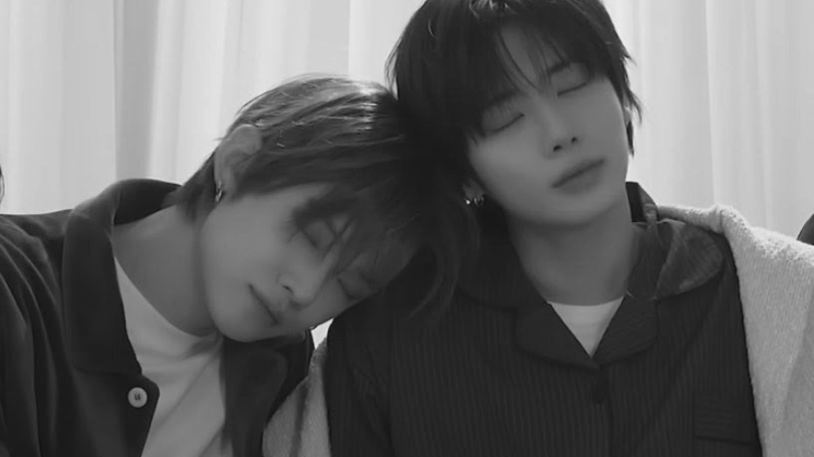

Dear Reyen,

Dua tahun telah berlalu dan hari ini adalah hari yang paling kunanti di tahun ini. Ketika lembar tahun 2026 terbuka, rasanya aku begitu bahagia bisa melewati tahun baru yang kedua kalinya bersamamu. Tapi aku selalu berandai-andai, apakah kita masih bisa bersama-sama setidaknya untuk satu tahun lagi?
Banyak pikiran-pikiran yang terkkadang menggangguku, mengingat aku dan kamu pasti akan memiliki kesibukan satu sama lain kedepannya. Tapi bahkan ketika kita melewati masa-masa sibuk itu, kita masih bisa bertahan dan aku sangat bersyukur karenanya. Lalu pada akhirnya, tanggal 22 September ini kembali menyapa kita.
Walaupun pada perayaan dua tahun ini mungkin belum sempurna, mungkin masih banyak kendala yang mengusik kita, atau wutwutwut yang terlalu membebani kita, semuanya tak sebanding dengan rasa bahagia yang kurasakan sekarang. Aku benar-benar bahagia bisa merayakan hari jadi ini bersamamu dan bersama banyak teman-teman.
Terima kasih banyak juga untuk hadiah menggemaskan yang kamu berikan. Segala bentuk usaha yang kamu berikan selalu terdengar begitu tulus dan rasanya aku ingin tenggelam dalam kata-katamu. Maka aku juga akan memberimu kata-kata yang tak seberapa.
And lastly...
Reyen, tetaplah bersamaku semampu dan selama yang kamu bisa. Izinkan aku untuk terus berusaha menjadi pasangan yang baik untukmu. Aku sangat menyayangimu, aku sangat mencintaimu, entah bagaimana lagi mengatakannya--I love you till the end of the time.
Dengan penuh cinta,
Dreamweaver, A